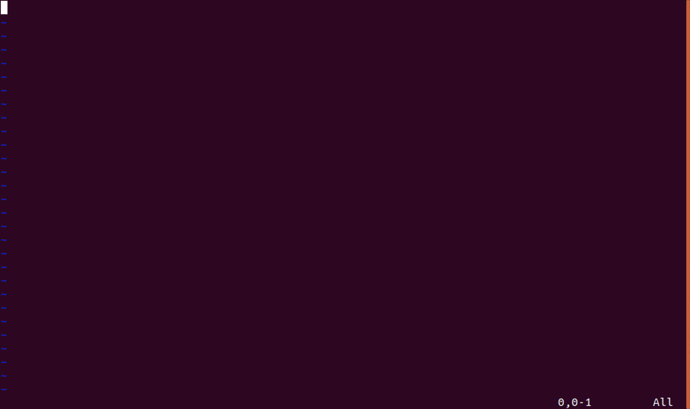
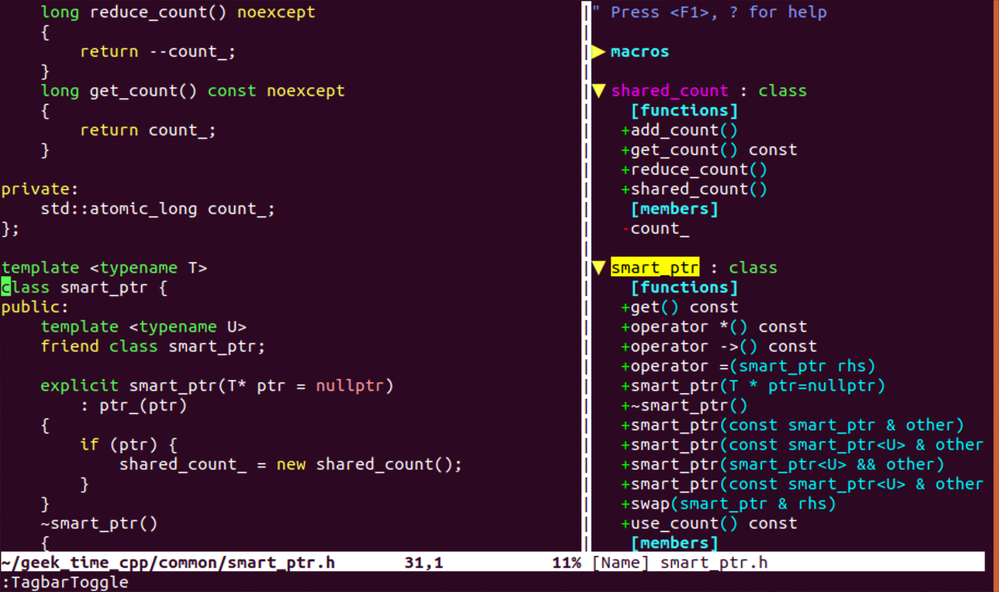
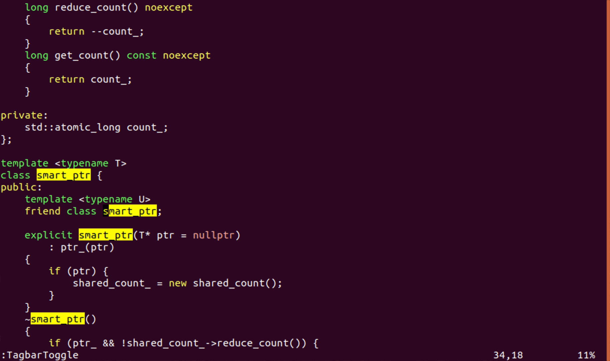
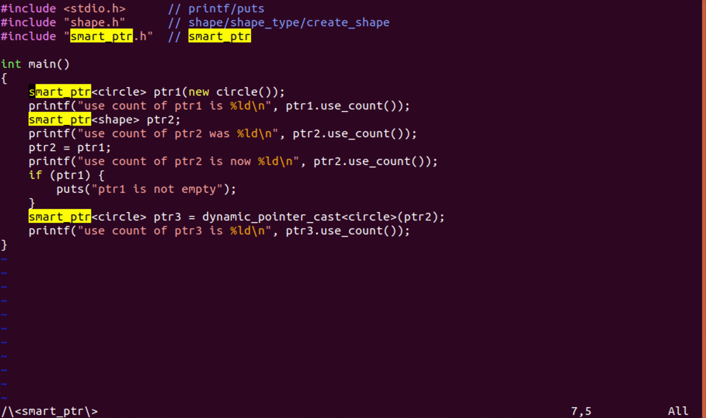
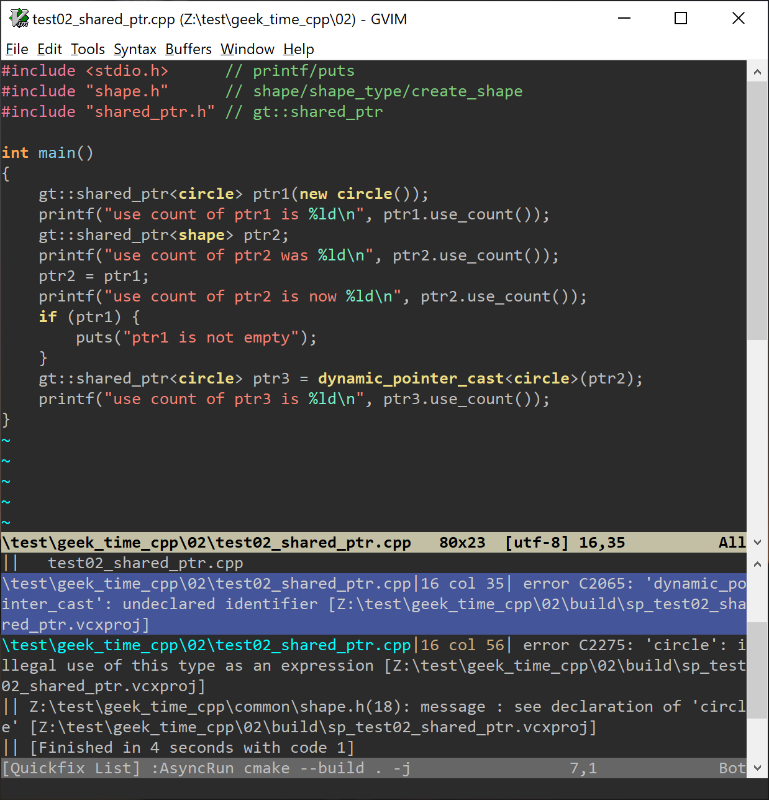

- 00 导读 池建强：Vim 就是四个字“唯快不破”.md.html
- 00 开篇词 我们为什么要学 Vim？.md.html
- 01 各平台下的 Vim 安装方法：上路前准备好你的宝马.md.html
- 02 基本概念和基础命令：应对简单的编辑任务.md.html
- 03 更多常用命令：应对稍复杂的编辑任务.md.html
- 04 初步定制：让你的 Vim 更顺手.md.html
- 05 多文件打开与缓冲区：复制粘贴的正确姿势.md.html
- 06 窗口和标签页：修改、对比多个文件的正确姿势.md.html
- 07 正则表达式：实现文件内容的搜索和替换.md.html
- 08 基本编程支持：规避、解决编程时的常见问题.md.html
- 09 七大常用技巧：让编辑效率再上一个台阶.md.html
- 10 代码重构实验：在实战中提高编辑熟练度.md.html
- 11 文本的细节：关于字符、编码、行你所需要知道的一切.md.html
- 12 语法加亮和配色方案：颜即正义.md.html
- 13 YouCompleteMe：Vim 里的自动完成.md.html
- 14 Vim 脚本简介：开始你的深度定制.md.html
- 15 插件荟萃：不可或缺的插件.md.html
- 16 终端和 GDB 支持：不离开 Vim 完成开发任务.md.html
- 拓展1 纯文本编辑：使用 Vim 书写中英文文档.md.html
- 拓展2 C 程序员的 Vim 工作环境：C 代码的搜索、提示和自动完成.md.html
- 拓展3 Python 程序员的 Vim 工作环境：完整的 Python 开发环境.md.html
- 拓展4 插件样例分析：自己动手改进插件.md.html
- 拓展5 其他插件和技巧：吴咏炜的箱底私藏.md.html
- 结束语 Vim 森林探秘，一切才刚刚开始.md.html
- 捐赠
10 代码重构实验：在实战中提高编辑熟练度
你好，我是吴咏炜。
在前几讲中，我们已经学了很多关于 Vim 的知识，现在需要好好消化一下。今天是基础篇的最后一讲，我们就基本上不学新的内容了，而是通过一个假想的代码重构实验，来复习、巩固已经学到的编辑技能。
开始前的准备工作
这是一堂实验课，你需要跟着我一步步地操作。跟只学习文字内容相比，实践操作能让你收获更多。所以，就请你现在把电脑准备好，跟我来吧。
今天我们将要做的是，签出我为极客时间写的 C++ 示例程序，并对其中的代码进行重构。别紧张，你不需要精通 C++，因为我会在必要的时候对代码进行解释。你学习的重点在于，我是如何进行编辑的，而不是我写的代码是什么意思。
首先，你需要先为工作代码找一个合适的父目录，然后用下面的命令签出代码（Windows 下面去掉“\”全部写一行，或者把“\”换成“^”））：
git clone --recurse-submodules \
--shallow-submodules \
https://github.com/adah1972/geek_time_cpp.git
万一我以后更改代码的话，就有可能造成内容或路径发生变化。所以，请把我们今天编辑的 commit id 记下来：632b067。如果你用 git log 看到 HEAD 的 commit id 不是它，可使用 git checkout 632b067 这个命令来签出跟今天完全相同的版本。
下面，我们就开始了！
类模板 smart_ptr 更名
我们第一步要做的，是把示例的 smart_ptr 类模板更名为 shared_ptr。同时，为了避免跟标准的 shared_ptr 发生冲突，我们要把它放到名空间 gt里面去（当然，你可以用其他名字；这只是我们的示例）。
大体思路是，先需要找到 shared_ptr 定义所在的文件，对其进行修改；然后找到使用该文件的地方，也进行相应的修改。下面我们就来做一下。
修改类定义
首先，我们需要进入 geek_time_cpp 所在的目录。如果你前面的命令就是 git clone 的话，那现在使用 cd geek_time_cpp 就可以了。
然后，我们当然是启动 Vim 了。假设我们知道 smart_ptr 被定义在 smart_ptr.h 头文件里，那我们最快的打开方式就是使用 :Files 命令，然后输入“sm”，即可看到“common/smart_ptr.h”成了第一选择。我们此时按下回车键即可打开文件。

进入文件后，我们先来看一下文件的结构。根据目前的 Vim 配置，我们可以使用 <F9> 打开 tagbar 插件。注意，这个文件使用了 C++11，Exuberant Ctags 会有错误的识别。下面的截图是安装了 Universal Ctags 之后的结果：

我们可以看到这个文件比较简单，里面主要就是两个类的定义和一些全局函数。不过，我们还是要确认一下，文件中没有任何会被错误匹配替换的内容。我们可以在右侧窗口里双击“smart_ptr”，这样左侧窗口就会跳转到 smart_ptr 的定义上，并且光标停留在类名上面。这样，我们只需使用 * 启动搜索和加亮即可。使用 n 继续搜索，我们很快就能确认文件中确实没有冲突的内容。
下面，我们进行替换操作，需要键入的是 :%s/<C-R>//shared_ptr/g<CR>（<C-R> 和 <CR> 都是按键，而非小于符号后面跟其他字符）。我们不需要手工输入 \<smart_ptr\>，因为搜索寄存器 / 中已经有我们要的内容了。

最后，我们在第一个类定义的前面加上 namespace gt {、在最后的 #endif 前面加上 } /* namespace gt *／，就完成了定义的修改。
不过，现在文件名还没有更改，文件里的包含保护（即宏 SMART_PTR_H）也没有更改。包含保护需要简单的重命名，就请你用我们目前介绍的任一方法自己完成了。随后，我们用命令 :Rename shared_ptr.h 即可完成更名和存盘操作。
修改使用 smart_ptr 的地方
我们先试着用下面的命令搜索一下：
:grep -R --include="*.cpp" --include="*.h" "\<smart_ptr\>" .
（小提示：在查看搜索结果的时候，适时使用 zz、zt 和 zb 命令，可以把周边的代码看得更清楚。）
使用 :cn （或我们定义的快捷键）仔细检查搜索出来的结果，我们会发现有一些误匹配：有 smart_ptr 是 unique_ptr 的情况，也有 smart_ptr 是策略类的情况。
我们稍微改换一下方法，搜索对 smart_ptr.h 的使用：
:grep -R --include="*.cpp" --include="*.h" "\<smart_ptr.h\>" .
这样的话，我们会发现结果只有一个匹配，那就简单了。
在上一讲里，我们已经讨论了在这种情况下进行修改的三种不同方法（忘了？请回过去复习一下）。今天，我们用第四种方法。这种方法的每一步我们实际上都讲过，但串起来用，你可能就没有试过了。我们使用的基本命令是 cw、n 和 .。
由于之前搜索过 smart_ptr，我们现在仍然可以继续使用 n 找到需要修改的地方。我们随即需要键入的，是 cwgt::shared_ptr<Esc>。这样输入虽然有点长、有点啰嗦，但它的好处是整个修改会被 Vim 看作是一步，因而可以用 . 命令来重复。这样，下面我们只需要反复利用 n 和 . 命令，把除了 #include 那行之外的所有 smart_ptr 都改成 gt::shared_ptr 即可。

很显然，这并不是唯一的方法，也不一定是最好的方法。所以，我建议你在这里暂停一下，用 :e! 重新载入这个文件，试试使用上一讲提到的其他方法。我这里就仅仅再给你展示一下如何使用替换命令，同时又不会误匹配文件名：
:%s/\<smart_ptr\>\ze\%([^.]\|$\)/gt::shared_ptr/g
这个匹配模式说的是，我要查找完整的单词“smart_ptr”（这就是要替换的内容了），但是，在匹配结束（\ze）后，我还有两个额外的匹配要求（用 \%( 和 \) 括起来），要么不是句点（[^.]），要么（\|）是行尾（$）。
我们最后把唯一残留的 smart_ptr.h 修改成 shared_ptr.h，就完成了 smart_ptr 的更名任务。
编译执行（可选）
如果你懂 C++，并且有 geek_time_cpp 的 README 文件里要求的执行环境的话，可以选择体验一下编译执行。
我们需要先在 02 目录下创建并进入 build 子目录，然后运行 cmake ..。随后，在 Unix 环境下，一般可立即使用快捷键 <F5> 进行编译；想要在 Windows 下也能正常进行编译，我们则应当设置 set makeprg=cmake\ --build\ .\ -j（老版本的 cmake 可能不支持 -j 命令行参数的话，这样的话，我们会没法用 cmake 进行并发编译；不过对于我们的小例子没啥关系）。
另外一个要注意的地方是，Vim 在缺省配置下不能识别 Visual C++ 的错误输出格式 。为了能进行识别，并在发生错误时跳转到文件的指定位置，我们需要设置下面的选项：
set errorformat=\ %#%f(%l\\\,%c):\ %m
目前来讲，环境没问题的话，我们就会……遇到编译错误。

原因是 dynamic_pointer_cast 前面也需要加上 gt::。做了这个修改之后，我们就应该可以顺利编译出可执行文件了。在 Windows 下使用命令 :!.\Debug\sp_test02_shared_ptr，或在 Unix 平台下使用命令 :!./sp_test02_shared_ptr，我们即可在终端看到下面的输出：
circle()-use count of ptr1 is 1-use count of ptr2 was 0-use count of ptr2 is now 2-ptr1 is not empty-use count of ptr3 is 3-~circle()
同时，如果愿意的话，我们也可以使用 AsyncRun 提供的机制，在 Windows 下使用命令 :AsyncRun .\Debug\sp_test02_shared_ptr，或在 Unix 平台下使用命令 :AsyncRun ./sp_test02_shared_ptr，异步运行程序并把输出重定向到 quickfix 窗口里。
添加跟踪语句
假设我们对这个代码执行过程有些疑问，想添加些跟踪语句，该怎么做呢？
我们首先需要在一个新窗口中打开 common/smart_ptr.h。由于我们第一个打开的文件就是它，所以它的缓冲区编号为 1，我们可在用 <C-W>n 打开一个新窗口后，使用 1<C-^> 飞速地重新打开文件。
我们希望对引用计数的增、减、删除等操作进行跟踪。最简单的方式，当然就是执行对应操作的时候，把执行的语句也输出一下。像这样简单的机械化操作，显然就是宏的天下了。我们来试一下。
我们先来改造一下 smart_ptr 析构函数里面的第一个 delete ptr_。一个可能的操作步骤是：
- 复制当前行
- 粘贴当前行
- 选中行首缩进后、结尾分号前的内容，套上双引号
- 在这个新对象前后插入输出所必须的命令
我们需要录制的宏的内容是 yyPv$hS"gvS)iputs<Esc>l%a;<Esc>，而你把这一串东西用 nmap 命令映射给某个按键上也完全可行（注意，此处不能用 nnoremap，因为我们需要使用 vim-surround 插件带来的新的 S 按键的定义）。当然，在交互的环境中，录制按键会比眼睛看这个字符串容易理解多了。Vim 的宏，就其本质而言，可算是一种只写不读的简单过程式语言。

我们用到的命令里，只有 gv 是之前没有学过的。我们当然也有其他方法来选中行中的内容，但 gv 的作用是重新选中刚才选中的内容，最快，也最方便。
利用这个宏，我们可以把添加调试语句变成按两个键。哦，对了，宏一旦执行过后，第二次执行同一个宏只需要键入 @@ 即可，这样还能更快些。
在我们把所有的 delete 语句和 add_count 函数调用行上执行了这个宏之后，我们运行程序可以得到下面的结果：
circle()-use count of ptr1 is 1-use count of ptr2 was 0-other.shared_count_->add_count();-use count of ptr2 is now 2-ptr1 is not empty-other.shared_count_->add_count();-use count of ptr3 is 3-delete ptr_;-~circle()-delete shared_count_;
如果想对这个代码作进一步调整，类似操作即可，相当容易吧？
调整测试用例
我们现在使用鼠标点击或者 <C-W>j 等命令跳转到测试代码 test02_shared_ptr.cpp 中。我们随即使用 <C-W>_ 命令来最大化窗口，因为似乎暂时用不着编辑 smart_ptr.h（但还不那么确定，否则就可以直接关闭那个窗口了）。
我们打算在 ptr1 不为空的那个条件判断下面再加点内容。那行输出看着也挺无聊的，我们就直接把它干掉了。我们可以在那组大括号内的任意地方点击后，使用 ci{ 开始编辑，然后输入以下内容：
printf("ptr1 %s ptr2\n",
ptr1 == ptr2 ? '==' : '!=');
代码编译居然有奇怪的告警出现……我是 Python 写多了，脑子没转回来吗？没关系，在第一处单引号内部键入 cs'"，然后在第二处单引号内部键入 . 重复一下就好，现在代码应该是正确的了：
printf("ptr1 %s ptr2\n",
ptr1 == ptr2 ? "==" : "!=");
再次编译，完美，没有问题了！运行程序，我们得到：
circle()-use count of ptr1 is 1-use count of ptr2 was 0-other.shared_count_->add_count();-use count of ptr2 is now 2-ptr1 == ptr2-other.shared_count_->add_count();-use count of ptr3 is 3-delete ptr_;-~circle()-delete shared_count_;
内容小结
今天我们尝试对一小段 C++ 代码进行了简单的重构。在这个过程中，我们使用和复习了下面这些编辑技巧：
- 使用 fzf.vim 来根据部分文件名迅速打开文件
- 使用 tagbar 来浏览文件的结构
- 使用 vim-eunuch 来进行文件更名
- 使用替换命令来进行批量代码更名
- 使用
.命令技巧来进行批量代码更名 - 使用
<C-R>在插入模式和命令行模式中使用寄存器的内容 - 使用
:grep命令在文件中进行文本搜索 - 使用异步的构建命令，并设置选项使得错误信息解析在 Visual Studio 工具里也能工作
- 使用文本对象命令对用括号、引号等符号包起来的文本进行统一的修改
- 使用宏，在一次操作之后，在遇到类似场景时可以快速修改
虽然今天的代码是 C++ 的，但这些编辑方式适用于任何语言。请你一定要牢牢掌握。我们也应该慢慢看到了，编辑的一个要点，在于把需要重复的工作自动化和简单化。Vim 作为一个程序员的编辑器，提供了灵活而强大的编辑机制——最终用户，或扩展包的开发者，都可以利用这些底层机制，使编辑变得更加高效。
本讲我们对 Windows 下的 vimrc 配置文件有一处小修改，对应的标签是“l10-windows”。
课后练习
实验课中的内容你已经一一尝试了吧？请你再向前一步，想一想我们的每次编辑是否可以有不同的执行方式，及哪种方式对你最顺手。Vim 的命令一定是在使用中才能熟练应用的。你不一定要记住所有可能的编辑方式，但每一种最好都至少尝试一次，然后找出最适合自己的、最能牢牢掌握的编辑方式。
我是吴咏炜，我们下一讲再见！
© 2019 - 2023 Liangliang Lee. Powered by gin and hexo-theme-book.